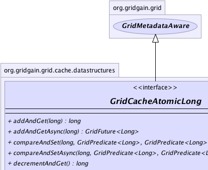
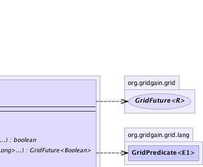
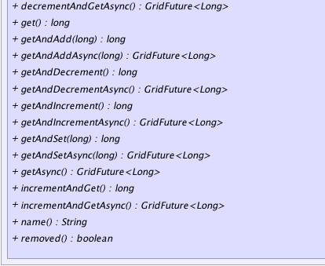
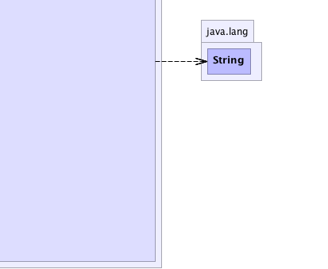

|
|

|

|
|

|

|

|
GridGain™ 3.6.0c
Community Edition |
|||||||||
| PREV CLASS NEXT CLASS | FRAMES NO FRAMES | |||||||||
| SUMMARY: NESTED | FIELD | CONSTR | METHOD | DETAIL: FIELD | CONSTR | METHOD | |||||||||
public interface GridCacheAtomicLong
This interface provides a rich API for working with distributedly cached atomic long value.
Note that atomic long is only available in Enterprise Edition.
GridCacheAtomicLong.get() synchronously gets current value of atomic long.
get..(..) methods synchronously get current value of atomic long
and increase or decrease value of atomic long.
GridCacheAtomicLong.addAndGet(long l) synchronously sums l with current value of atomic long
and returns result.
GridCacheAtomicLong.incrementAndGet() synchronously increases value of atomic long and returns result.
GridCacheAtomicLong.decrementAndGet() synchronously decreases value of atomic long and returns result.
GridCacheAtomicLong.getAndSet(long l) synchronously gets current value of atomic long and sets l
as value of atomic long.
GridCacheAtomicLong.name() gets name of atomic long.
| Wiki | |
| Forum |
GridCache.atomicLong(String),
GridCache.atomicLong(String, long, boolean)
|  |  |
|  |  |
| Method Summary | |
|---|---|
long |
addAndGet(long l)
Adds l and gets current value of atomic long. |
GridFuture<Long> |
addAndGetAsync(long l)
Adds l and gets current value of atomic long asynchronously. |
boolean |
compareAndSet(long l,
GridPredicate<Long> p,
GridPredicate<Long>... pa)
Atomically sets the new value l of atomic long if set of predicates is true asynchronously. |
GridFuture<Boolean> |
compareAndSetAsync(long l,
GridPredicate<Long> p,
GridPredicate<Long>... ps)
Atomically sets the new value l of atomic long if set of predicates is true. |
long |
decrementAndGet()
Decrements and gets current value of atomic long. |
GridFuture<Long> |
decrementAndGetAsync()
Decrements and gets current value of atomic long asynchronously. |
long |
get()
Gets current value of atomic long. |
long |
getAndAdd(long l)
Gets current value of atomic long and adds l. |
GridFuture<Long> |
getAndAddAsync(long l)
Gets current value of atomic long and adds l asynchronously. |
long |
getAndDecrement()
Gets and decrements current value of atomic long. |
GridFuture<Long> |
getAndDecrementAsync()
Gets and decrements current value of atomic long asynchronously. |
long |
getAndIncrement()
Gets and increments current value of atomic long. |
GridFuture<Long> |
getAndIncrementAsync()
Gets and increments current value of atomic long asynchronously. |
long |
getAndSet(long l)
Gets current value of atomic long and sets new value l of atomic long. |
GridFuture<Long> |
getAndSetAsync(long l)
Gets current value of atomic long and sets new value l of atomic long asynchronously. |
GridFuture<Long> |
getAsync()
Gets current value of atomic long asynchronously. |
long |
incrementAndGet()
Increments and gets current value of atomic long. |
GridFuture<Long> |
incrementAndGetAsync()
Increments and gets current value of atomic long asynchronously. |
String |
name()
Name of atomic long. |
boolean |
removed()
Gets status of atomic. |
| Methods inherited from interface org.gridgain.grid.GridMetadataAware |
|---|
addMeta, addMetaIfAbsent, addMetaIfAbsent, allMeta, copyMeta, copyMeta, hasMeta, hasMeta, meta, putMetaIfAbsent, putMetaIfAbsent, removeMeta, removeMeta, replaceMeta |
| Method Detail |
|---|
String name()
long get()
throws GridException
GridException - If operation failed.
GridFuture<Long> getAsync() throws GridException
GridException - If operation failed.
long incrementAndGet()
throws GridException
GridException - If operation failed.
GridFuture<Long> incrementAndGetAsync() throws GridException
GridException - If operation failed.
long getAndIncrement()
throws GridException
GridException - If operation failed.
GridFuture<Long> getAndIncrementAsync() throws GridException
GridException - If operation failed.
long addAndGet(long l)
throws GridException
l and gets current value of atomic long.
GridException - If operation failed.l - Number which will be added.
GridFuture<Long> addAndGetAsync(long l) throws GridException
l and gets current value of atomic long asynchronously.
GridException - If operation failed.l - Number which will be added.
long getAndAdd(long l)
throws GridException
l.
GridException - If operation failed.l - Number which will be added.
GridFuture<Long> getAndAddAsync(long l) throws GridException
l asynchronously.
GridException - If operation failed.l - Number which will be added.
long decrementAndGet()
throws GridException
GridException - If operation failed.
GridFuture<Long> decrementAndGetAsync() throws GridException
GridException - If operation failed.
long getAndDecrement()
throws GridException
GridException - If operation failed.
GridFuture<Long> getAndDecrementAsync() throws GridException
GridException - If operation failed.
long getAndSet(long l)
throws GridException
l of atomic long.
GridException - If operation failed.l - New value of atomic long.
GridFuture<Long> getAndSetAsync(long l) throws GridException
l of atomic long asynchronously.
GridException - If operation failed.l - New value of atomic long.
boolean compareAndSet(long l,
GridPredicate<Long> p,
GridPredicate<Long>... pa)
throws GridException
l of atomic long if set of predicates is true asynchronously.
GridException - If operation failed.l - New value of atomic long.p - Predicate which should evaluate to true for value to be set.pa - Additional predicates can be used optional.
true value of atomic long will be updated.GridFuture<Boolean> compareAndSetAsync(long l, GridPredicate<Long> p, GridPredicate<Long>... ps) throws GridException
l of atomic long if set of predicates is true.
GridException - If operation failed.l - New value of atomic long.p - Predicate which should evaluate to true for value to be set.ps - Additional predicates can be used optional.
boolean removed()
true if atomic was removed from cache, false in other case.
|
GridGain™ 3.6.0c
Community Edition |
|||||||||
| PREV CLASS NEXT CLASS | FRAMES NO FRAMES | |||||||||
| SUMMARY: NESTED | FIELD | CONSTR | METHOD | DETAIL: FIELD | CONSTR | METHOD | |||||||||
|
GridGain - Real Time Big Data
|
|
|
|